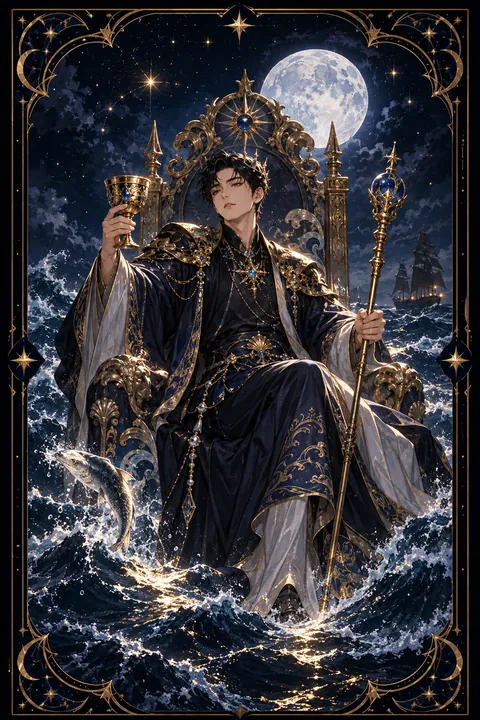

이 게시물은 쿠팡 파트너스 활동의 일환으로, 이에 따른 일정액의 수수료를 제공받습니다.


컵 왕 카드 — 흔들리지 않는 감정의 중심
컵 왕 카드 한눈에 보기
컵 왕 카드 상징 읽기

동네보살의 카드 그림은 전통 라이더–웨이트 덱의 뜻을 새 그림으로 옮긴 것입니다. 아래 상징 설명은 전통 덱의 그림을 기준으로 합니다.
왕은 거친 바다 한가운데 떠 있는 돌 옥좌에 앉아 있습니다. 사방에서 파도가 일렁이지만 왕의 표정은 평온합니다. 감정의 소용돌이 속에서도 중심을 잃지 않는 성숙함을 상징하는 장면입니다.
왕은 오른손에 잔을, 왼손에 홀을 들고 있습니다. 잔은 감정과 공감을, 홀은 권위와 책임을 뜻합니다. 마음과 이성을 함께 쥐고 균형을 잡는 지도자의 모습입니다.
목에 건 물고기 모양 목걸이는 감정의 세계를 깊이 이해하는 사람임을 나타냅니다. 한쪽에서 뛰어오르는 물고기는 무의식에서 솟아오르는 감정을, 반대편의 배는 거친 물결을 헤치고 앞으로 가는 현실의 항해를 뜻합니다.
왕의 발이 물에 닿지 않는다는 점도 눈여겨볼 만합니다. 감정을 느끼되 그 속에 빠지지 않는 거리를 지킨다는 의미입니다.
컵 왕 카드 정방향 뜻
정방향 컵 왕은 감정을 다스리는 성숙함과 너그러운 리더십을 뜻합니다. 주변 상황이 혼란스럽더라도 차분하게 중심을 잡고 사람들을 이끌 수 있는 시기입니다. 당신의 침착함이 주변에 안정감을 주어 자연스럽게 신뢰가 모입니다.
이 카드는 감정과 이성의 균형을 강조합니다. 공감하면서도 휘둘리지 않고 따뜻하면서도 분명한 판단을 내리는 태도가 좋은 결과를 이끌어 냅니다. 갈등을 중재하거나 누군가에게 조언해야 하는 자리에서 특히 힘을 발휘합니다.
나이 많은 조언자나 믿을 만한 윗사람의 도움을 받는 흐름으로 읽기도 합니다. 속상한 일이 있어도 한 박자 쉬고 차분하게 표현하면 오해 없이 마음을 전할 수 있습니다. 너그러움은 흔들리지 않는 힘에서 나온다는 사실을 기억하세요.
컵 왕 카드 역방향 뜻
역방향 컵 왕은 감정의 중심이 기울어진 모습입니다. 겉으로는 침착해 보이지만 속으로 감정을 억누르고 있다가 예상치 못한 순간에 폭발하거나 냉담하게 등을 돌리는 모습일 수 있습니다.
다정한 태도 뒤에 속셈을 감추고 다른 사람의 감정을 이용하려는 인물을 경고하기도 합니다. 반대로 스스로가 속마음을 숨긴 채 상황을 뜻대로 움직이려 하고 있지는 않은지 스스로 점검해 보아야 합니다. 기분에 따라 태도가 달라져 주변을 혼란스럽게 하는 흐름도 이 카드에 속합니다.
이 카드는 감정을 숨기지 말고 건강한 방식으로 표현하라고 조언합니다. 화가 날 때는 즉시 반응하기보다 잠시 시간을 두고 차분한 언어로 전하세요. 믿을 만한 사람과 속마음을 나누면 눌러 두었던 감정이 풀리고 판단도 다시 맑아집니다.
연애에서 컵 왕 카드
솔로라면 성숙하고 배려심 깊은 사람과 인연이 닿을 수 있는 시기입니다. 나이가 많거나 정서적으로 안정된 상대에게 끌리기 쉬우며 편안한 대화 속에서 호감이 깊어집니다. 조급하게 다가가기보다 믿음을 쌓아 가는 만남이 잘 맞습니다.
오래 만난 연인이 있다면 서로를 너그럽게 받아 주며 안정된 관계를 이어 가는 흐름입니다. 다툼이 생겨도 감정적으로 대응하기보다 차분히 대화하면 관계가 오히려 깊어집니다. 상대가 힘들어할 때 든든한 버팀목이 되어 주세요. 다만 참기만 하는 것이 배려는 아닙니다. 서운한 점은 부드럽게 전해야 쌓이지 않습니다. 겉으로 괜찮다고 말하는 상대라면 그 속마음까지 헤아려 보려는 노력이 필요합니다. 감정의 파도가 칠 때 먼저 중심을 잡아 주는 쪽이 관계를 이끌게 됩니다. 성숙한 사랑은 조용하지만 오래갑니다.
재회·속마음 질문에서 컵 왕 카드
재회 질문에서 컵 왕이 나오면 상대가 감정을 정리하고 한결 차분해진 상태일 가능성이 큽니다. 성숙한 대화로 다시 가까워질 여지가 있지만 상대는 쉽게 속내를 드러내지 않을 수 있습니다. 감정에 호소하기보다 달라진 태도와 안정감을 보여 주는 편이 효과적입니다. 지난 일을 두고 누구 잘못인지 따지기보다 서로 배운 점을 담담하게 나누면 상대도 마음의 문을 엽니다. 연락은 짧고 정중하게 하되 답을 재촉하지 마세요. 왕이 거꾸로 나왔다면 상대가 마음을 숨기고 있거나 관계를 저울질하고 있을 수 있으니 말보다 행동을 지켜보세요. 다시 연결되더라도 예전 방식 그대로가 아니라 한층 여유 있는 관계를 목표로 삼는 편이 좋습니다.
일·금전에서 컵 왕 카드
일과 직장에서는 사람을 이끄는 자리나 조율하는 역할이 주어지는 시기입니다. 팀원들의 마음을 헤아리면서도 분명한 방향을 제시하는 리더십이 인정받습니다. 상담, 교육, 복지, 예술 분야처럼 감정과 전문성을 함께 다루는 일과도 잘 맞습니다.
금전 면에서는 감정에 휘둘리지 않는 차분한 관리가 빛을 발합니다. 급하게 결정하기보다 충분히 검토한 뒤 움직이면 안정적인 흐름을 이어 갈 수 있습니다. 경험 많은 조언자의 의견을 참고하면 시야가 넓어집니다. 팀 안의 갈등을 조용히 풀어 주는 역할을 맡으면 평판이 크게 오릅니다. 감정이 격해진 회의에서는 결정을 서두르지 말고 다음 날 다시 모이자고 제안해 보세요.
컵 왕 카드는 예일까 아니오일까
감정을 다스리는 성숙함으로 상황을 원만하게 풀어 간다는 의미가 강해 예로 판단합니다. 뒤집힌 왕이라면 숨겨진 감정이나 속셈이 변수가 되므로 상대의 진심부터 헤아려 보라는 뜻에서 조건부입니다.
자주 묻는 질문
컵 왕 카드 역방향은 나쁜 뜻인가요?
역방향 컵 왕은 감정의 중심이 기울어진 모습입니다. 겉으로는 침착해 보이지만 속으로 감정을 억누르고 있다가 예상치 못한 순간에 폭발하거나 냉담하게 등을 돌리는 모습일 수 있습니다.
컵 왕 카드가 연애 질문에 나오면요?
솔로라면 성숙하고 배려심 깊은 사람과 인연이 닿을 수 있는 시기입니다. 나이가 많거나 정서적으로 안정된 상대에게 끌리기 쉬우며 편안한 대화 속에서 호감이 깊어집니다. 조급하게 다가가기보다 믿음을 쌓아 가는 만남이 잘 맞습니다.
타로 카드는 어떻게 뽑나요?
타로 카드 페이지에서 78장을 섞으면 그중 22장이 펼쳐집니다. 마음이 가는 세 장을 고르면 과거·현재·미래 자리에 놓이고, 한 장씩 뒤집어 자리와 방향에 맞는 풀이를 읽습니다. 정방향과 역방향은 섞는 순간 정해집니다.